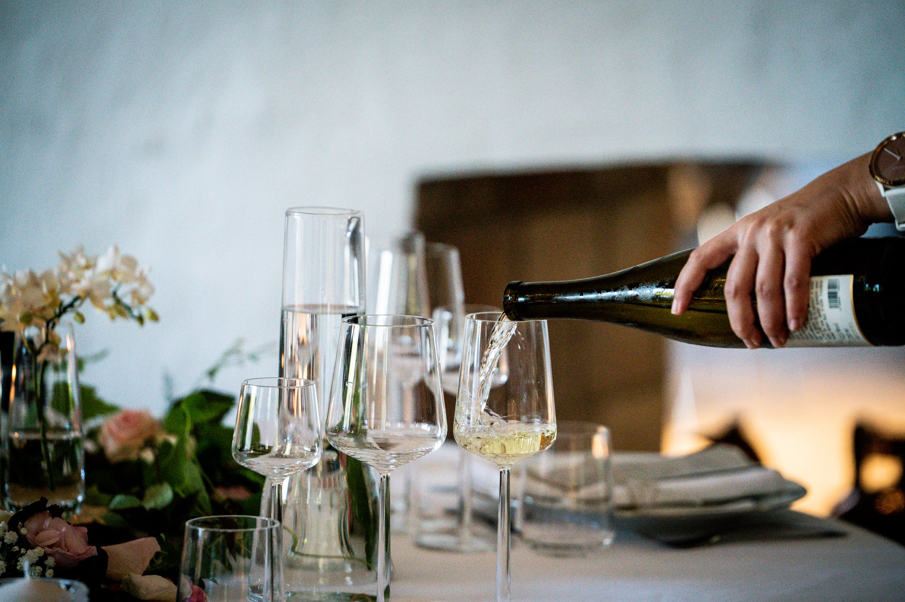

Italiaans genieten bij Verdi!
Restaurant Verdi heeft alle ingrediënten om heerlijk te kunnen genieten in een unieke omgeving in Amsterdam. Het dakterras geeft een prachtig uitzicht en is omringd door een prachtig bos. Of je nu zin hebt in een lekker bakje koffie, een lunch, diner of borrel: bij ons kan het allemaal. Kom even heerlijk tot rust en Italiaans genieten!

Gastvrijheid

Persoonlijke aandacht